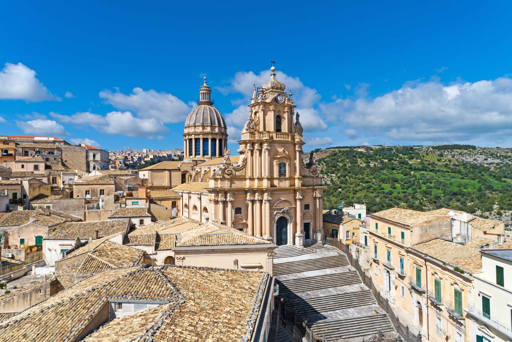

La Piazza del Duomo di Siracusa, sull'isola di Ortigia, è considerata una delle piazze più belle d'Italia. La Cattedrale è stata costruita inglobando le colonne dell'antico Tempio greco di Atena del V secolo a.C., ancora visibili all'interno della struttura.
La piazza è circondata da splendidi palazzi barocchi e rappresenta il cuore pulsante della vita sociale siracusana, teatro di mercati, eventi e celebrazioni per Santa Lucia, patrona della città.
Le attrazioni principali sono:
Posizione: Nel cuore dell'isola di Ortigia, accessibile a piedi dal Ponte Umbertino o dal Ponte Santa Lucia.